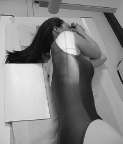
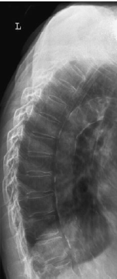

Thoracic Spine(Lateral)
Centering point:The central ray should be at right-angles to the long axis of
the thoracic vertebrae. This may require a caudal angulation.
Centre 5 cm anterior to the spinous process of T6/7. This is
usually found just below the inferior angle of the scapula
(assuming the arms are raised), which is easily palpable

Cassette Size:35cm x 43cm (17 x 14ins) larger patient
30cm x 35cm (14 x 14ins) smaller patient
Portrait
Exposure Factors:75kVp on 40MaS
FFD:120cm
Bucky/Grid:Moving or Stationary Grid
Filter:No
Collimation:Collimate tightly to the spine
Pathologies:Fractures, spondylolisthesis, bone lesions, osteoporosis, foreign bodies
Position of patient and cassette
- Usually undertaken with the patient in the lateral decubitus
position on the X-ray table, although this projection can also
be performed erect.
- Usually undertaken with the patient in the lateral decubitus
position on the X-ray table, although this projection can also
be performed erect.
- The arms should be raised well above the head
- The head can be supported with a pillow, and pads may be
placed between the knees for the patient’s comfort
- The upper edge of the cassette should be at least 40 cm in
length and should be positioned 3–4 cm above the spinous
process of C7
Radiograph
